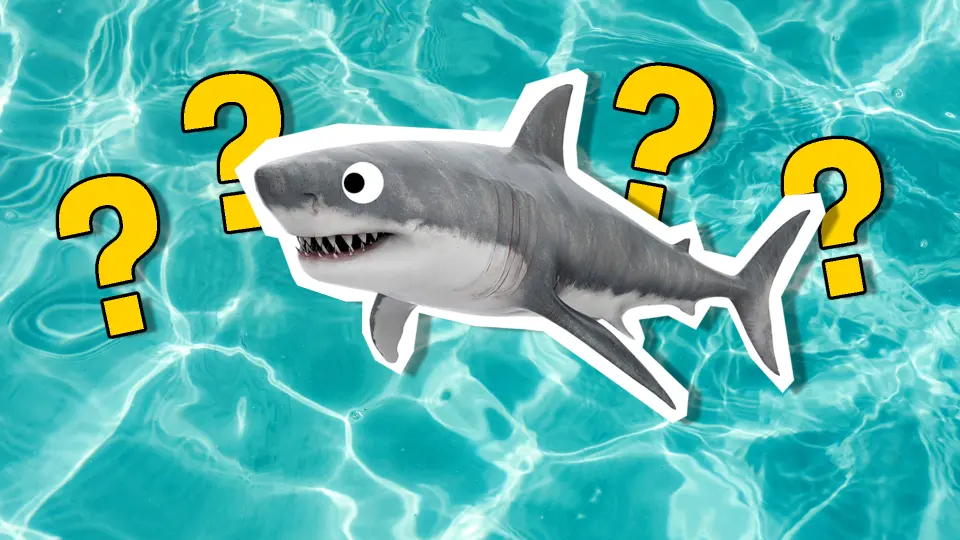

When it comes to shark attacks, 3543 men have been attacked without fatal outcomes, where 1293 men have experienced attacks that were fatal.
On the women's side, 475 have been attacked without fatal outcomes, while 124 women have experienced fatal attacks.
This treemap visualization shows the 10 most popular activities to do when getting attacked by sharks
You can click on the different parts of the visualization, to see the amount of fatal vs non-fatal attacks that have occured when doing said activity. If you want to return to the overall data, you can double-click to zoom out again.
Hover over the activities in order to see which one it is
This bar chart visualization highlights the 5 countries with the most shark attack incidents.
You can hover over the bars to unveil the precise number of attacks in that country, accompanied by fascinating shark-related fun facts unique to each location.
Click the image below to take this fun interactive quiz to discover which shark matches your personality!
